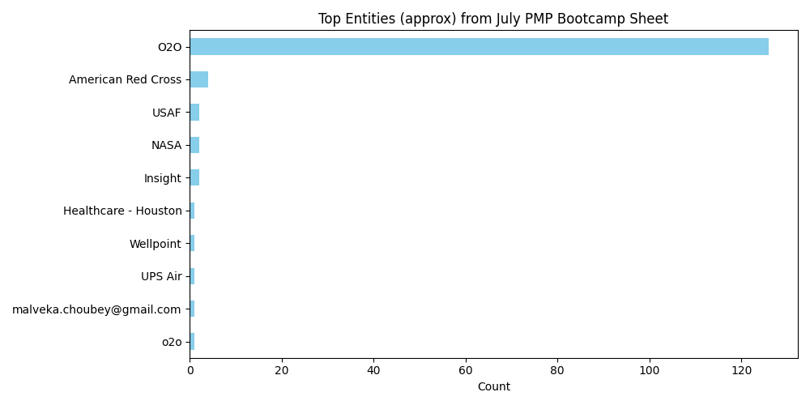

Empowering retailers with interactive dashboards to maximise marketing ROI.
An ecommerce retailer struggled to piece together performance data from multiple marketing channels. Without a single view of their funnel, they couldn’t spot drop‑offs or optimise campaigns effectively. Ironclad delivered a suite of interactive dashboards covering acquisition, engagement and lifetime value.
Our solution pulled data from ad platforms, web analytics and CRM systems, presenting it through intuitive charts and KPIs. Teams now explore metrics with ease — filtering by channel, cohort or timeframe — and act on insights immediately.
The visual above illustrates how certain marketing channels outperform others. By focusing spend on high‑ROI campaigns and nurturing repeat customers, our client increased conversion rates by 15% and boosted customer lifetime value by 25%.
Let us craft a custom analytics suite tailored to your business needs.
Contact Our Team